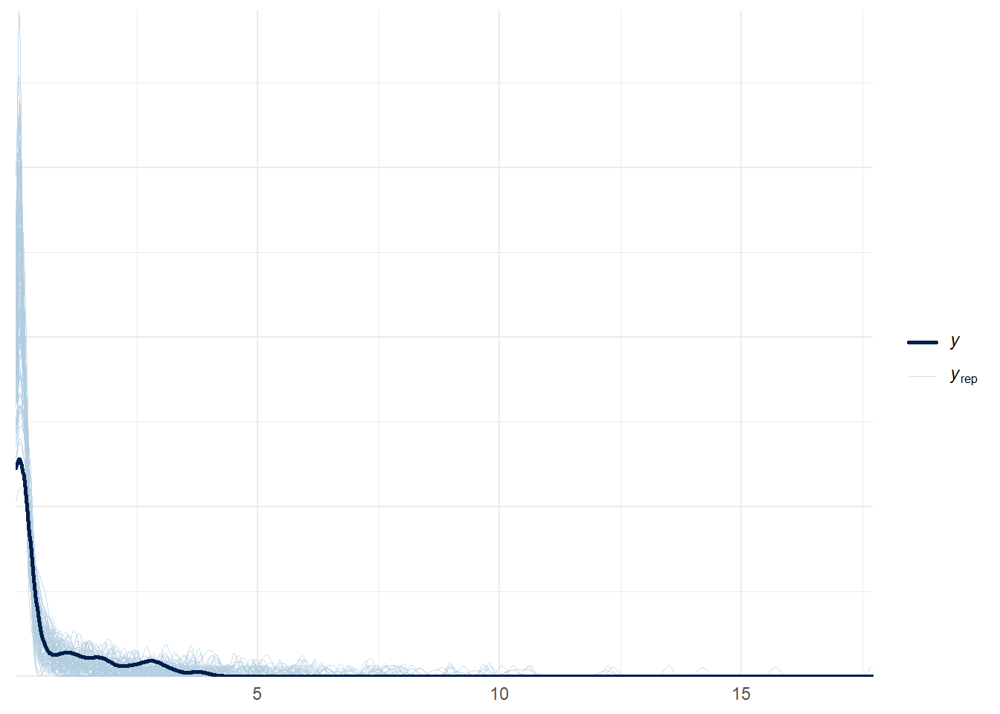

f <-bf(error ~0, mu ~ (1| participantId), # this is actually lambda family =exponential())# mu has log-link, so we don't pose any bounds on it p <-c(prior(normal(0, 1), class = Intercept), prior(cauchy(0, 1), class = sd, group = participantId, lb =0))
Family: exponential
Links: mu = log
Formula: error ~ 0
mu ~ (1 | participantId)
Data: . (Number of observations: 80)
Draws: 4 chains, each with iter = 2000; warmup = 1000; thin = 1;
total post-warmup draws = 4000
Multilevel Hyperparameters:
~participantId (Number of levels: 8)
Estimate Est.Error l-95% CI u-95% CI Rhat Bulk_ESS Tail_ESS
sd(Intercept) 1.56 0.52 0.88 2.79 1.00 749 801
Regression Coefficients:
Estimate Est.Error l-95% CI u-95% CI Rhat Bulk_ESS Tail_ESS
Intercept -1.16 0.51 -2.09 -0.08 1.00 776 1129
Draws were sampled using sampling(NUTS). For each parameter, Bulk_ESS
and Tail_ESS are effective sample size measures, and Rhat is the potential
scale reduction factor on split chains (at convergence, Rhat = 1).
plot(model.exponential)
pp_check(model.exponential, ndraws =100)

pp_check(model.exponential, ndraws =100, type ="pit_ecdf") # pet Matt's suggestion
Lomax is Pareto Type II distribution. We had similar models for task 2.
lomax_family <-custom_family("lomax",dpars =c("mu", "lambda", "alpha"), # includes mu as requiredlinks =c("identity", "log", "log"), # appropriate linkslb =c(-Inf, 0, 0), # appropriate boundstype ="real")stan_funs <-" real lomax_lpdf(real y, real mu, real lambda, real alpha) { return pareto_type_2_lpdf(y | 0, lambda, alpha); # mu is ignored } real lomax_rng(real mu, real lambda, real alpha) { return pareto_type_2_rng(0, lambda, alpha); # mu is ignored }"
# Define the formula for the modelf <-bf( error ~0, mu ~0, alpha ~ (1| participantId), lambda ~ (1| participantId) )p <-c(prior(normal(0, 1), class = Intercept, dpar = alpha),prior(cauchy(0, 1), class = sd, group = participantId, dpar = alpha, lb =0),prior(normal(0, 1), class = Intercept, dpar = lambda), prior(cauchy(0, 1), class = sd, group = participantId, dpar = lambda, lb =0) )
# Fit the model with brmsmodel.lomax <- task4_df %>%mutate(error =abs(data_to_screen_slope(data.select.slope) -data_to_screen_slope(data.ans.slope))) %>%mutate(error =ifelse(error < tolerance, tolerance, error)) %>%brm(formula = f,data = .,family = lomax_family,prior = p,stanvars =stanvar(scode = stan_funs, block ="functions"),chains =4,file ="models/task4.lomax", # init = list()control =list(adapt_delta =0.99), iter =8000, )
Check fit:
# Examine model resultssummary(model.lomax)
Family: lomax
Links: mu = identity; lambda = log; alpha = log
Formula: error ~ 0
mu ~ 0
alpha ~ (1 | participantId)
lambda ~ (1 | participantId)
Data: . (Number of observations: 80)
Draws: 4 chains, each with iter = 8000; warmup = 4000; thin = 1;
total post-warmup draws = 16000
Multilevel Hyperparameters:
~participantId (Number of levels: 8)
Estimate Est.Error l-95% CI u-95% CI Rhat Bulk_ESS
sd(alpha_Intercept) 0.55 0.48 0.02 1.75 1.00 3418
sd(lambda_Intercept) 2.43 1.14 1.12 5.45 1.00 3466
Tail_ESS
sd(alpha_Intercept) 6827
sd(lambda_Intercept) 4901
Regression Coefficients:
Estimate Est.Error l-95% CI u-95% CI Rhat Bulk_ESS Tail_ESS
lambda_Intercept -1.07 0.76 -2.53 0.46 1.00 10337 10299
alpha_Intercept 0.46 0.49 -0.48 1.48 1.00 8777 8460
Draws were sampled using sampling(NUTS). For each parameter, Bulk_ESS
and Tail_ESS are effective sample size measures, and Rhat is the potential
scale reduction factor on split chains (at convergence, Rhat = 1).
WARNING: Rtools is required to build R packages, but is not currently installed.
Please download and install the appropriate version of Rtools for 4.4.3 from
https://cran.r-project.org/bin/windows/Rtools/.
Trying to compile a simple C file
Running "C:/PROGRA~1/R/R-4.4.3/bin/x64/Rcmd.exe" SHLIB foo.c
using C compiler: 'gcc.exe (GCC) 13.3.0'
gcc -I"C:/PROGRA~1/R/R-4.4.3/include" -DNDEBUG -I"C:/Users/slong/AppData/Local/R/win-library/4.4/Rcpp/include/" -I"C:/Users/slong/AppData/Local/R/win-library/4.4/RcppEigen/include/" -I"C:/Users/slong/AppData/Local/R/win-library/4.4/RcppEigen/include/unsupported" -I"C:/Users/slong/AppData/Local/R/win-library/4.4/BH/include" -I"C:/Users/slong/AppData/Local/R/win-library/4.4/StanHeaders/include/src/" -I"C:/Users/slong/AppData/Local/R/win-library/4.4/StanHeaders/include/" -I"C:/Users/slong/AppData/Local/R/win-library/4.4/RcppParallel/include/" -DRCPP_PARALLEL_USE_TBB=1 -I"C:/Users/slong/AppData/Local/R/win-library/4.4/rstan/include" -DEIGEN_NO_DEBUG -DBOOST_DISABLE_ASSERTS -DBOOST_PENDING_INTEGER_LOG2_HPP -DSTAN_THREADS -DUSE_STANC3 -DSTRICT_R_HEADERS -DBOOST_PHOENIX_NO_VARIADIC_EXPRESSION -D_HAS_AUTO_PTR_ETC=0 -include "C:/Users/slong/AppData/Local/R/win-library/4.4/StanHeaders/include/stan/math/prim/fun/Eigen.hpp" -std=c++1y -I"C:/rtools44/x86_64-w64-mingw32.static.posix/include" -O2 -Wall -mfpmath=sse -msse2 -mstackrealign -c foo.c -o foo.o
cc1.exe: warning: command-line option '-std=c++14' is valid for C++/ObjC++ but not for C
In file included from C:/Users/slong/AppData/Local/R/win-library/4.4/RcppEigen/include/Eigen/Core:19,
from C:/Users/slong/AppData/Local/R/win-library/4.4/RcppEigen/include/Eigen/Dense:1,
from C:/Users/slong/AppData/Local/R/win-library/4.4/StanHeaders/include/stan/math/prim/fun/Eigen.hpp:22,
from <command-line>:
C:/Users/slong/AppData/Local/R/win-library/4.4/RcppEigen/include/Eigen/src/Core/util/Macros.h:679:10: fatal error: cmath: No such file or directory
679 | #include <cmath>
| ^~~~~~~
compilation terminated.
make: *** [C:/PROGRA~1/R/R-4.4.3/etc/x64/Makeconf:289: foo.o] Error 1
WARNING: Rtools is required to build R packages, but is not currently installed.
Please download and install the appropriate version of Rtools for 4.4.3 from
https://cran.r-project.org/bin/windows/Rtools/.
# Define the posterior_predict function in R as per vignetteposterior_predict_lomax <-function(i, draws, ...) { alpha <- draws$dpars$alpha[i] lambda <- draws$dpars$lambda[i]# Use Stan's rng function indirectly via brmslomax_rng(0, lambda, alpha)}log_lik_lomax <-function(i, prep){ alpha <- brms::get_dpar(prep, "alpha", i = i) lambda <- brms::get_dpar(prep, "lambda", i = i) y <- prep$data$Y[i]lomax_lpdf(y, 0, lambda, alpha)}pp_check(model.lomax, ndraws =100)
pp_check(model.lomax, ndraws =100, type ="pit_ecdf")
Warning: Found 2 observations with a pareto_k > 0.7 in model
'model.exponential'. We recommend to set 'moment_match = TRUE' in order to
perform moment matching for problematic observations.
Warning: Found 1 observations with a pareto_k > 0.7 in model 'model.weibull'.
We recommend to set 'moment_match = TRUE' in order to perform moment matching
for problematic observations.
Output of model 'model.exponential':
Computed from 4000 by 80 log-likelihood matrix.
Estimate SE
elpd_loo 33.5 17.3
p_loo 12.0 4.0
looic -67.0 34.7
------
MCSE of elpd_loo is NA.
MCSE and ESS estimates assume MCMC draws (r_eff in [0.5, 1.3]).
Pareto k diagnostic values:
Count Pct. Min. ESS
(-Inf, 0.7] (good) 78 97.5% 380
(0.7, 1] (bad) 2 2.5% <NA>
(1, Inf) (very bad) 0 0.0% <NA>
See help('pareto-k-diagnostic') for details.
Output of model 'model.lomax':
Computed from 16000 by 80 log-likelihood matrix.
Estimate SE
elpd_loo 37.5 19.0
p_loo 28.0 6.5
looic -75.0 38.0
------
MCSE of elpd_loo is 0.1.
MCSE and ESS estimates assume MCMC draws (r_eff in [0.3, 1.0]).
All Pareto k estimates are good (k < 0.7).
See help('pareto-k-diagnostic') for details.
Output of model 'model.weibull':
Computed from 4000 by 80 log-likelihood matrix.
Estimate SE
elpd_loo 84.4 25.8
p_loo 12.8 2.3
looic -168.9 51.6
------
MCSE of elpd_loo is NA.
MCSE and ESS estimates assume MCMC draws (r_eff in [0.7, 1.3]).
Pareto k diagnostic values:
Count Pct. Min. ESS
(-Inf, 0.7] (good) 79 98.8% 897
(0.7, 1] (bad) 1 1.2% <NA>
(1, Inf) (very bad) 0 0.0% <NA>
See help('pareto-k-diagnostic') for details.
Model comparisons:
elpd_diff se_diff
model.weibull 0.0 0.0
model.lomax -46.9 14.1
model.exponential -51.0 17.6
The weibull model performs the best.
pp_check(model.exponential, ndraws =100, type ="pit_ecdf")pp_check(model.lomax, ndraws =100, type ="pit_ecdf")pp_check(model.weibull, ndraws =100, type ="pit_ecdf")